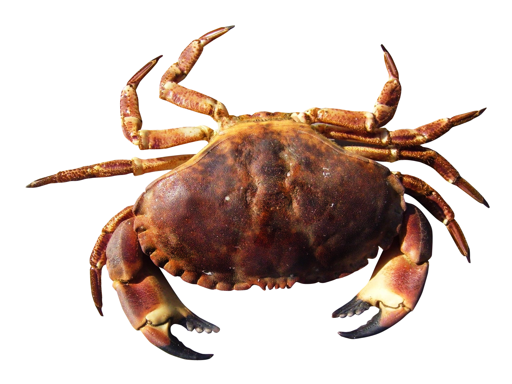

The body plan of kings. All creatures will become as the crab, as all creatures will join in the glory of the creator. Originally, Discus was played using a crab, the sport seen as a religious analogy in that only the crab, select birds, bats, and most of the Apollo missions may reach heaven through innate virtue.
The discus of God, hurled to the Earth by heavenly hands to enact the will of the Trinity (Leo 1-21)